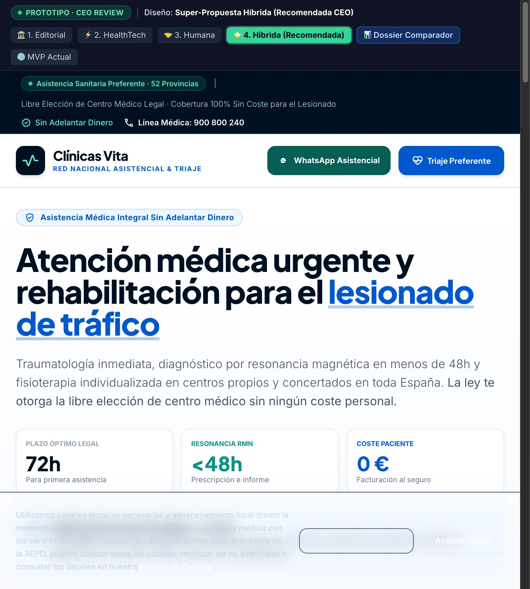
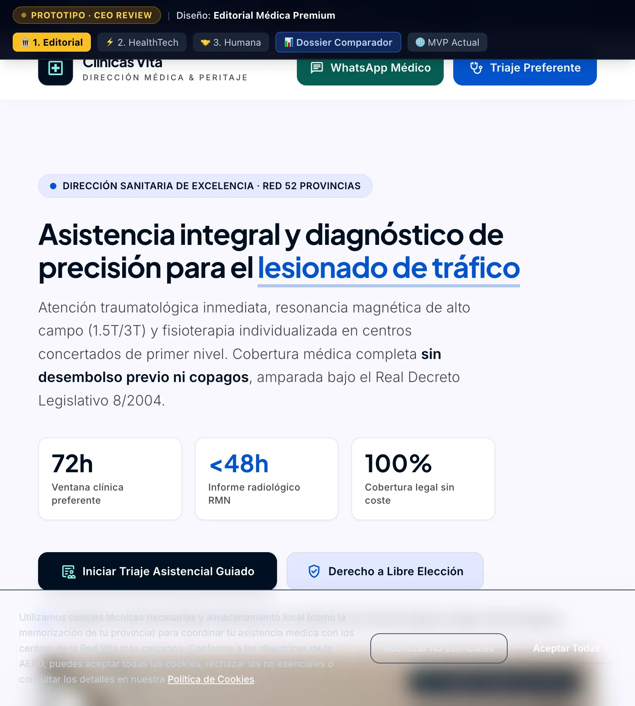
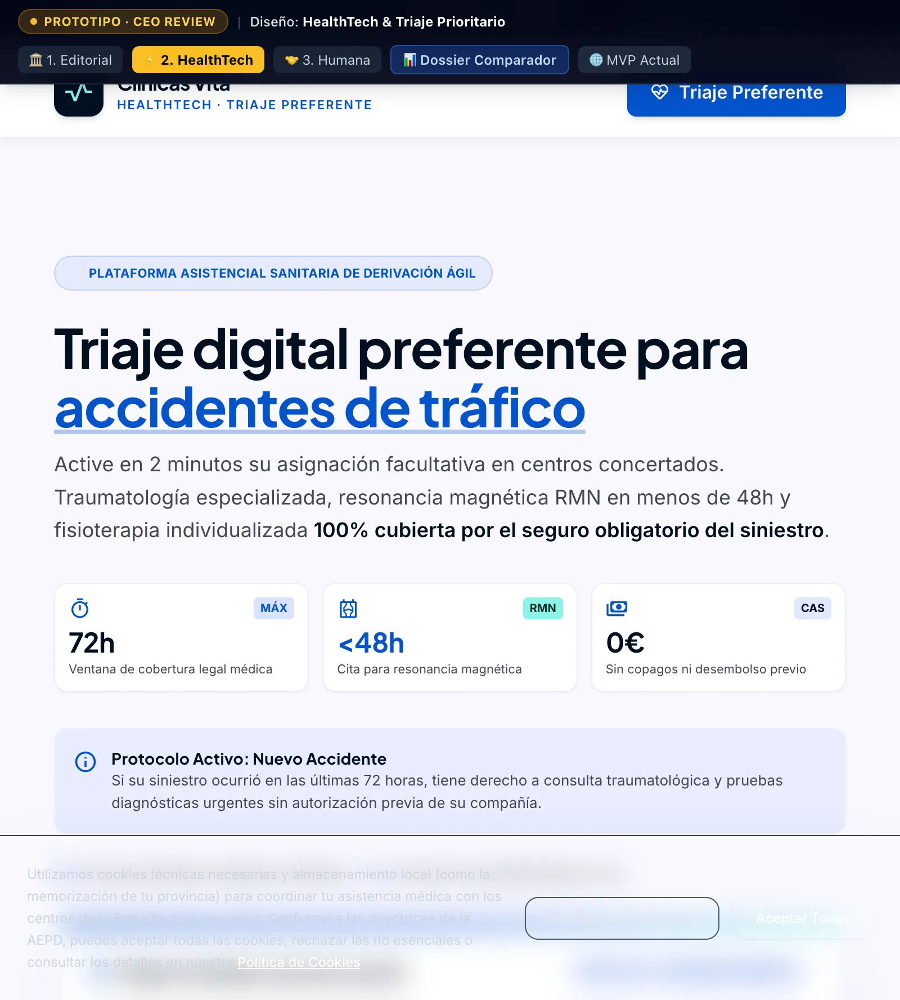
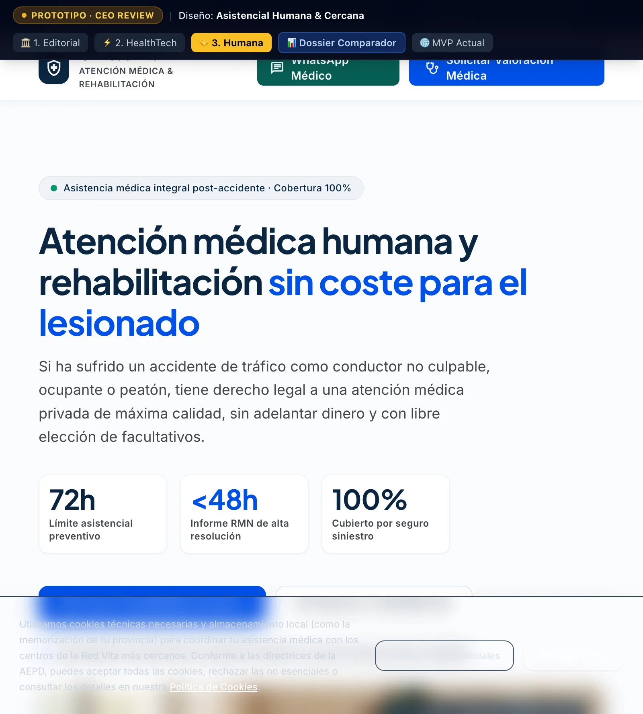

Editorial Médica Premium
Inspirada en cabeceras de referencia científica (Mayo Clinic). Jerarquía sobria, tipografía robusta y métricas de excelencia médica.
HealthTech & Triaje
Inspirada en plataformas de salud digital (Doctolib, One Medical). Hero interactivo con triaje sintomatológico inmediato y 72h.
Asistencial Humana
Inspirada en cercanía asistencial (Bupa, Sanitas Care). Fotografía humana de terapeutas y pacientes, tono tranquilizador y cero estrés.
Super-Propuesta Híbrida
Combina el Hero interactivo de la Opción 2 con el bento grid de prestigio de la Opción 1 y la calidez humana de la Opción 3.
Super-Propuesta Híbrida
La integración perfecta solicitada para aunar lo mejor de cada vertiente: triaje inmediato interactivo y calculadora dinámica de 72h en el Hero (para maximizar la conversión B2C desde móvil), bento grid editorial de alta resolución (con resonancia 1.5T/3T y traumatología para cautivar a la red médica B2B) y tabla comparativa frente a mutuas masificadas con garantías de coste cero.
¿Por qué es la opción ganadora?
- check_circle Conversión B2C instantánea: El lesionado selecciona el foco del dolor (Cervicalgia, Lumbalgia...) en 1 clic y ve su cita tramitada en menos de 15 min.
- check_circle Seducción B2B para Centros Sanitarios: Las clínicas de fisioterapia y traumatología ven una marca médica de élite, no un agregador comercial de seguros.
- check_circle Máximo blindaje jurídico: Respeto total al marco legal, libre elección de centro y cero fricción burocrática para el paciente.

Prototipos Individuales de Referencia
Explora las 3 líneas de diseño puras que sirvieron de base para la propuesta híbrida.
Editorial Médica Premium
Diseño sobrio de azul marino profundo, blanco marfil y acentos azul zafiro. Despliega un sistema bento con métricas clínicas (72h, 100% cobertura sin coste, +240 centros) y un módulo de triaje guiado.

HealthTech & Triaje Prioritario
Diseño de alto rendimiento que sitúa el triaje en el hero visible sin hacer scroll, con conmutador de protocolo (Nuevo Accidente vs. Traslado de Mutua) y calculadora visual del plazo crítico de 72 horas.

Asistencial Humana & Cercana
Diseño enfocado en calmar al paciente. Utiliza fotografía humana de sanitarios, explicaciones en 3 pasos muy visuales y un tono protector para eliminar la incertidumbre legal y económica.

Comparativa Directa: 4 Opciones vs. MVP Actual
Evaluación por factores estratégicos clave para la decisión de Dirección General.
| Criterio Estratégico | MVP Actual | 1. Editorial | 2. HealthTech | 3. Humana | ⭐ 4. Híbrida (Recomendada) |
|---|---|---|---|---|---|
| Diferenciación de Competencia | Baja (Parecido visual) | 100% Diferenciado | 100% Diferenciado | 100% Diferenciado | 100% Incomparable |
| Autoridad Médica Institucional | Media | Máxima (Rigor Clínico) | Muy Alta | Alta | Máxima (Bento de Alta Resolución) |
| Conversión B2C (Lesionados Móvil) | Estándar | Alta | Máxima (Triaje Hero) | Muy Alta (Empatía) | Máxima (Triaje Hero + WhatsApp) |
| Atracción de Clínicas B2B | Básica | Excelente (Prestigio) | Muy Buena | Buena | Excelente (Sección Expansión Sur) |
| Módulo Interactivo 72 Horas | No tiene | Texto estático | Calculadora Dinámica | Paso a paso | Calculadora Dinámica con Slider |
| Cumplimiento WCAG AAA & RGPD | 100% Conforme | 100% Conforme | 100% Conforme | 100% Conforme | 100% Conforme |